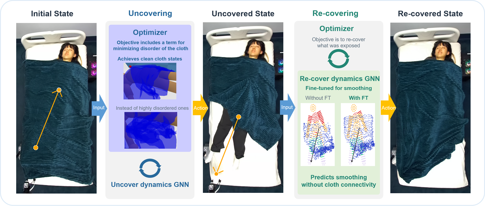
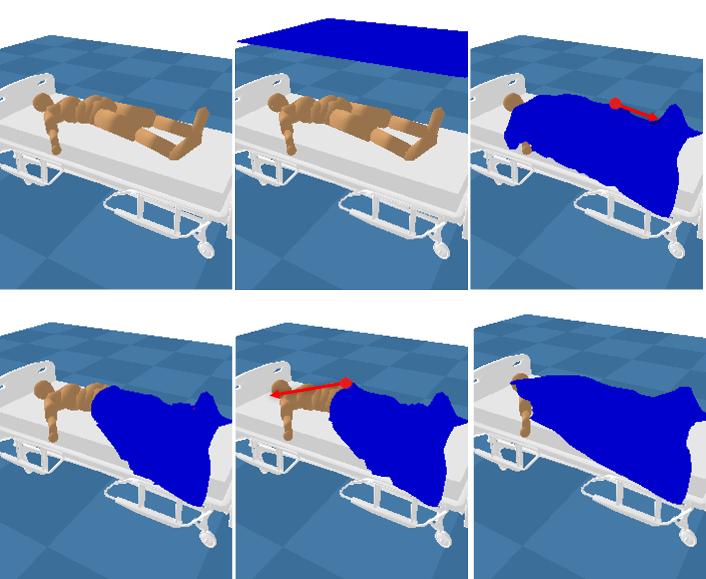
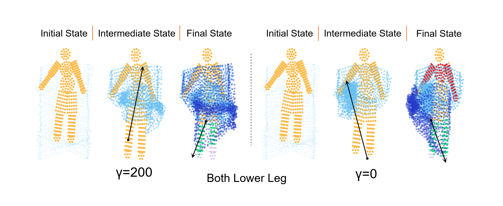
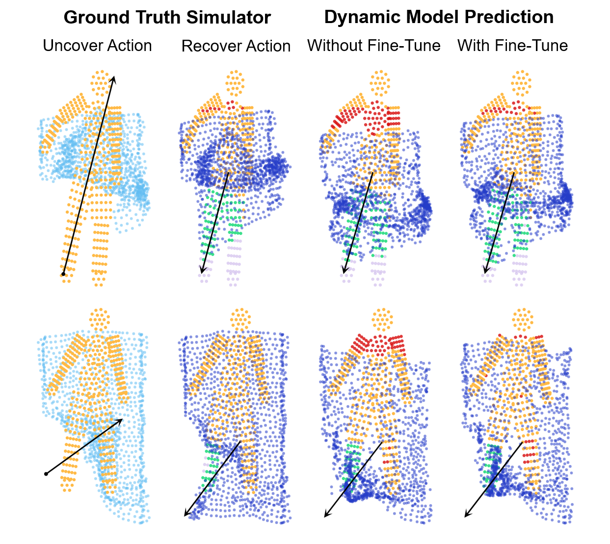
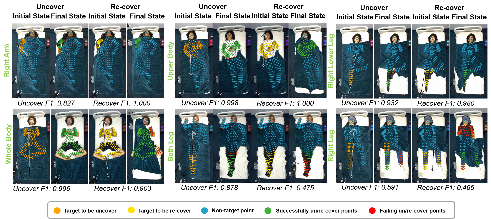

Research Project
Uncover to Re-cover: Model-Based Blanket Manipulation for In-Bed Assistance
Abstract
Providing in-bed assistance remains a challenging type of physical human–robot interaction because sheets and blankets obscure the body. Earlier work has considered uncovering target limbs, while re-covering them is harder because the cloth deforms and hides its own structure. This paper treats the two actions as a coupled problem. An entropy term discourages disordered cloth states during uncovering; those states make the following re-covering action harder. A graph-based dynamics model is fine-tuned on smoothing interactions to predict how folds can unfurl without explicitly estimating cloth connectivity. The system is trained and evaluated in simulation, then transferred to a 10-participant human study.
Paper Summary
Central idea. Plan uncovering to leave a blanket state that supports the re-covering action that follows.
The cloth configuration produced by one action affects the difficulty of the next. The system combines an entropy-aware uncovering objective with a graph dynamics model trained to predict smoothing during re-covering.

Represent blanket motion with a graph dynamics model
The observed blanket point cloud becomes a graph. The dynamics model predicts point displacement for a candidate grasp-and-release action, and CMA-ES searches over actions using the task objective. Re-covering is planned from the state produced by uncovering.

Evaluations
Plan an intermediate state that is easier to re-cover
The uncovering objective includes an entropy term that discourages highly overlapping cloth configurations. The re-covering objective remains unchanged. With an entropy weight of 200, the reported re-covering mean F1 is 0.70, compared with 0.63 when the entropy weight is 0. Uncovering mean F1 is 0.77 and 0.81, respectively.

| Entropy weight (γ) | Uncovering | Re-covering |
|---|---|---|
| 0 | 0.81 ± 0.20 | 0.63 ± 0.32 |
| 100 | 0.79 ± 0.23 | 0.65 ± 0.29 |
| 200 | 0.77 ± 0.26 | 0.70 ± 0.26 |
Fine-tune the model to predict smoothing
Folds and self-occlusion make re-covering dynamics difficult to predict. Fine-tuning on smoothing interactions improves the model's predictions of how folded cloth can unfurl, without explicitly estimating cloth connectivity.

| Method | Re-covering |
|---|---|
| Dynamics model with fine-tuning | 0.70 ± 0.26 |
| Dynamics model without fine-tuning | 0.68 ± 0.26 |
| Geometric heuristic | 0.56 ± 0.34 |
| Ground-truth mesh-edge graph | 0.71 ± 0.28 |
Human Study
The study evaluates zero-shot transfer of the simulation-trained dynamics models with 10 participants. The mean uncovering F1 is 0.77 ± 0.19; the mean re-covering F1 is 0.75 ± 0.26. Lower-body re-covering remains challenging, and friction can cause the robot to release the blanket before completing the planned trajectory.

Per-target results
| Target area | Human study (n = 10) | Simulation | ||
|---|---|---|---|---|
| Uncovering (F1,U) | Re-covering (F1,R) | Uncovering (F1,U) | Re-covering (F1,R) | |
| Right arm | 0.64 ± 0.26 | 0.99 ± 0.01 | 0.77 ± 0.26 | 0.87 ± 0.19 |
| Upper body | 0.96 ± 0.03 | 0.87 ± 0.10 | 0.95 ± 0.04 | 0.59 ± 0.39 |
| Right lower leg | 0.68 ± 0.14 | 0.80 ± 0.21 | 0.84 ± 0.16 | 0.74 ± 0.26 |
| Right leg | 0.64 ± 0.07 | 0.75 ± 0.21 | 0.66 ± 0.13 | 0.64 ± 0.29 |
| Both lower legs | 0.86 ± 0.11 | 0.53 ± 0.24 | 0.83 ± 0.23 | 0.60 ± 0.29 |
| Lower body | 0.76 ± 0.27 | 0.48 ± 0.31 | 0.82 ± 0.23 | 0.44 ± 0.16 |
| Entire body | 0.86 ± 0.08 | 0.86 ± 0.19 | 0.94 ± 0.03 | 0.54 ± 0.22 |
| Overall mean | 0.77 ± 0.19 | 0.75 ± 0.26 | 0.79 ± 0.22 | 0.65 ± 0.29 |
Main Finding
Sequential blanket manipulation depends on the state each action leaves behind. The results support planning uncovering for the re-covering task that follows, then using dynamics trained to predict cloth smoothing to complete the sequence.